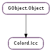

| static | error_quark() |
| static | new() |
| add_metadata(key, value) | |
| create_from_edid(gamma_value, red, green, blue, white) | |
| get_blue() | |
| get_can_delete() | |
| get_checksum() | |
| get_colorspace() | |
| get_copyright(locale) | |
| get_created() | |
| get_description(locale) | |
| get_filename() | |
| get_green() | |
| get_handle() | |
| get_kind() | |
| get_manufacturer(locale) | |
| get_metadata_item(key) | |
| get_model(locale) | |
| get_red() | |
| get_size() | |
| get_temperature() | |
| get_version() | |
| get_white() | |
| load_data(data, data_len, flags) | |
| load_fd(fd, flags) | |
| load_file(file, flags, cancellable) | |
| load_handle(handle, flags) | |
| remove_metadata(key) | |
| save_data(flags) | |
| save_file(file, flags, cancellable) | |
| set_colorspace(colorspace) | |
| set_copyright(locale, value) | |
| set_description(locale, value) | |
| set_filename(filename) | |
| set_kind(kind) | |
| set_manufacturer(locale, value) | |
| set_model(locale, value) | |
| set_version(version) | |
| to_string() |
| Name | Type | Flags | Description |
|---|---|---|---|
| blue | Colord.ColorXYZ | r | |
| can-delete | bool | r | |
| checksum | str | r | |
| colorspace | int | r/w | |
| filename | str | r | |
| green | Colord.ColorXYZ | r | |
| kind | int | r/w | |
| red | Colord.ColorXYZ | r | |
| size | int | r | |
| temperature | int | r | |
| version | float | r/w | |
| white | Colord.ColorXYZ | r |
None
| Name | Type | Access |
|---|---|---|
| parent | GObject.Object | r |
| priv | Colord.IccPrivate | r |
Bases: GObject.Object
| Returns: | a new Colord.Icc object. |
|---|---|
| Return type: | Colord.Icc |
Creates a new Colord.Icc object.
| Parameters: |
|---|
Sets an item of data to the profile metadata, overwriting it if it already exists.
| Parameters: |
|
|---|---|
| Raises: | |
| Returns: | True for success |
| Return type: |
Creates an ICC profile from EDID data.
| Returns: | the Colord.ColorXYZ value |
|---|---|
| Return type: | Colord.ColorXYZ |
Gets the profile red chromaticity value. This function will only return results if the profile was loaded with the Colord.IccLoadFlags.PRIMARIES flag.
| Returns: | True if Gio.File.delete () would likely work |
|---|---|
| Return type: | bool |
Finds out if the profile could be deleted. This is only applicable for profiles loaded with Colord.Icc.load_file () as obviously data and fd’s cannot be sanely unlinked.
| Returns: | An embedded MD5 checksum, or None for not set |
|---|---|
| Return type: | str |
Gets the profile checksum if one exists. This will either be the embedded profile ID, or the file checksum if the Colord.Icc object was loaded using Colord.Icc.load_data () or Colord.Icc.load_file () and the Colord.IccLoadFlags.FALLBACK_MD5 flag is used.
| Returns: | The profile colorspace, e.g. Colord.Colorspace.RGB |
|---|---|
| Return type: | Colord.Colorspace |
Gets the profile colorspace
| Parameters: | locale (str) – A locale, e.g. “en_GB.UTF-8” or None for the profile default |
|---|---|
| Raises: | GLib.GError |
| Returns: | The text as a UTF-8 string, or None of the locale is invalid or the tag does not exist. |
| Return type: | str |
Gets the profile copyright. If the translated text is not available in the selected locale then the default untranslated (en_US) text is returned.
| Returns: | A GLib.DateTime object, or None for not set |
|---|---|
| Return type: | GLib.DateTime |
Gets the ICC creation date and time.
| Parameters: | locale (str) – A locale, e.g. “en_GB.UTF-8” or None for the profile default |
|---|---|
| Raises: | GLib.GError |
| Returns: | The text as a UTF-8 string, or None of the locale is invalid or the tag does not exist. |
| Return type: | str |
Gets the profile description. If the translated text is not available in the selected locale then the default untranslated (en_US) text is returned.
| Returns: | A filename, or None |
|---|---|
| Return type: | str |
Gets the filename of the ICC data, if one exists.
| Returns: | the Colord.ColorXYZ value |
|---|---|
| Return type: | Colord.ColorXYZ |
Gets the profile green chromaticity value. This function will only return results if the profile was loaded with the Colord.IccLoadFlags.PRIMARIES flag.
| Returns: | Do not call cmsCloseProfile() on this value! |
|---|---|
| Return type: | int |
Return the cmsHPROFILE instance used locally. This may be required if you are using the profile in a transform.
| Returns: | The kind, e.g. %CD_PROFILE_KIND_INPUT |
|---|---|
| Return type: | Colord.ProfileKind |
Gets the profile kind.
| Parameters: | locale (str) – A locale, e.g. “en_GB.UTF-8” or None for the profile default |
|---|---|
| Raises: | GLib.GError |
| Returns: | The text as a UTF-8 string, or None of the locale is invalid or the tag does not exist. |
| Return type: | str |
Gets the profile manufacturer. If the translated text is not available in the selected locale then the default untranslated (en_US) text is returned.
| Parameters: | key (str) – the dictionary key |
|---|---|
| Returns: | The dictionary data, or None if the key does not exist. |
| Return type: | str |
Gets an item of data from the ICC metadata store.
| Parameters: | locale (str) – A locale, e.g. “en_GB.UTF-8” or None for the profile default |
|---|---|
| Raises: | GLib.GError |
| Returns: | The text as a UTF-8 string, or None of the locale is invalid or the tag does not exist. |
| Return type: | str |
Gets the profile model. If the translated text is not available in the selected locale then the default untranslated (en_US) text is returned.
| Returns: | the Colord.ColorXYZ value |
|---|---|
| Return type: | Colord.ColorXYZ |
Gets the profile red chromaticity value. This function will only return results if the profile was loaded with the Colord.IccLoadFlags.PRIMARIES flag.
| Returns: | The size in bytes, or 0 for unknown. |
|---|---|
| Return type: | int |
Gets the ICC profile file size
| Returns: | The color temperature in Kelvin, or 0 for error. |
|---|---|
| Return type: | int |
Gets the ICC color temperature, rounded to the nearest 100K. This function will only return results if the profile was loaded with the Colord.IccLoadFlags.PRIMARIES flag.
| Returns: | A floating point version number, or 0.0 for unknown |
|---|---|
| Return type: | float |
Gets the ICC profile version, typically 2.1 or 4.2
| Returns: | the Colord.ColorXYZ value |
|---|---|
| Return type: | Colord.ColorXYZ |
Gets the profile white point. This function will only return results if the profile was loaded with the Colord.IccLoadFlags.PRIMARIES flag.
| Parameters: |
|
|---|---|
| Raises: | |
| Return type: |
Loads an ICC profile from raw byte data.
| Parameters: |
|
|---|---|
| Raises: | |
| Return type: |
Loads an ICC profile from an open file descriptor.
| Parameters: |
|
|---|---|
| Raises: | |
| Return type: |
Loads an ICC profile from a local or remote file.
| Parameters: |
|
|---|---|
| Raises: | |
| Return type: |
Set the internal cmsHPROFILE instance. This may be required if you create the profile using cmsCreateRGBProfile() and then want to use the functionality in Colord.Icc.
Do not call cmsCloseProfile() on handle in the caller, this will be done when the icc object is finalized. Treat the profile like it’s been adopted by this module.
Additionally, this function cannot be called more than once, and also can’t be called if Colord.Icc.load_file () has previously been used on the icc object.
| Parameters: | flags (Colord.IccSaveFlags) – a set of Colord.IccSaveFlags |
|---|---|
| Raises: | GLib.GError |
| Return type: | GLib.Bytes |
Saves an ICC profile to an allocated memory location.
Return vale: A GLib.Bytes structure, or None for error
| Parameters: |
|
|---|---|
| Raises: | |
| Return type: |
Saves an ICC profile to a local or remote file.
Return vale: True for success.
| Parameters: | colorspace (Colord.Colorspace) – the profile colorspace, e.g. Colord.Colorspace.RGB |
|---|
Sets the colorspace kind.
| Parameters: |
|---|
Sets the profile _copyright for a specific locale.
| Parameters: |
|---|
Sets the profile description for a specific locale.
| Parameters: | filename (str) – a filename, or None |
|---|
Sets the filename, which may be required if the ICC profile has been loaded using Colord.Icc.load_fd () from a disk cache.
| Parameters: | kind (Colord.ProfileKind) – the profile kind, e.g. Colord.ProfileKind.DISPLAY_DEVICE |
|---|
Sets the profile kind.
| Parameters: |
|---|
Sets the profile manufacturer for a specific locale.
| Parameters: |
|---|
Sets the profile model for a specific locale.
| Parameters: | version (float) – the profile version, e.g. 2.1 or 4.0 |
|---|
Sets the profile version.